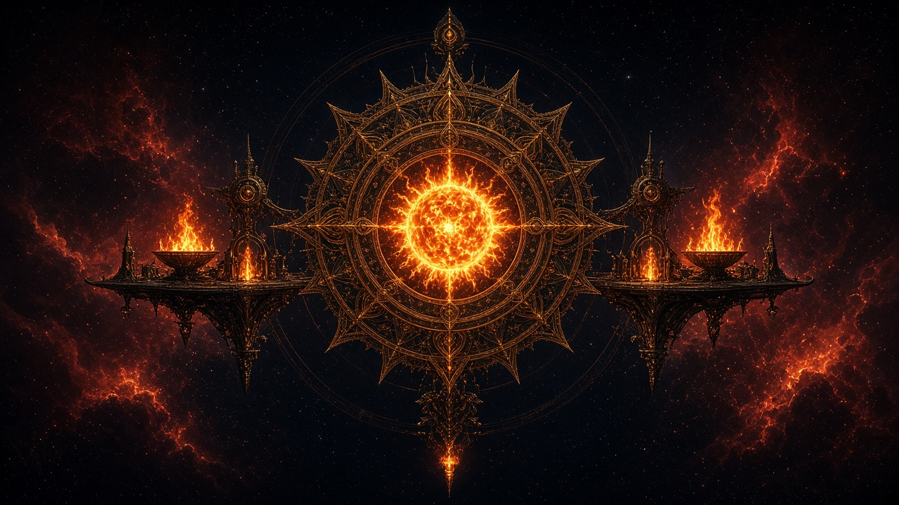

1 · Elemental cardinal
Fire
The Sea of Flame
An ocean of fire that does not end. Heat is the weather, fuel is the currency, & every conversation wants more of both. Brass cities ride currents of flame the way ships ride a tide; beyond their walls the Sea of Fire has no honest shore—only deeper heat.
You will meet efreeti courts that bargain like slow burns, azer forges that never cool, fire elementals that treat flesh as kindling, & salamanders who measure diplomacy in degrees. Mephits of flame & cinder skitter through the lower docks, carrying gossip that arrives already scorched.
There are no true layers—only depth of heat. The great landmark that bargains instead of consuming is the brass metropolis afloat on the flow: courts, markets, & furnaces stacked until the sky itself looks forged.
Arrive through a volcano’s heart, a carefully tuned Gate, or a Lighthouse mercy-road during a clean Daystar pulse. Bring water that will not boil on contact with your name, & never bargain for “just a little more flame.”